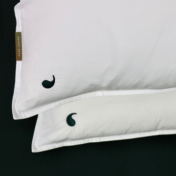
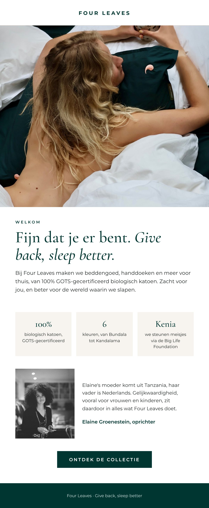
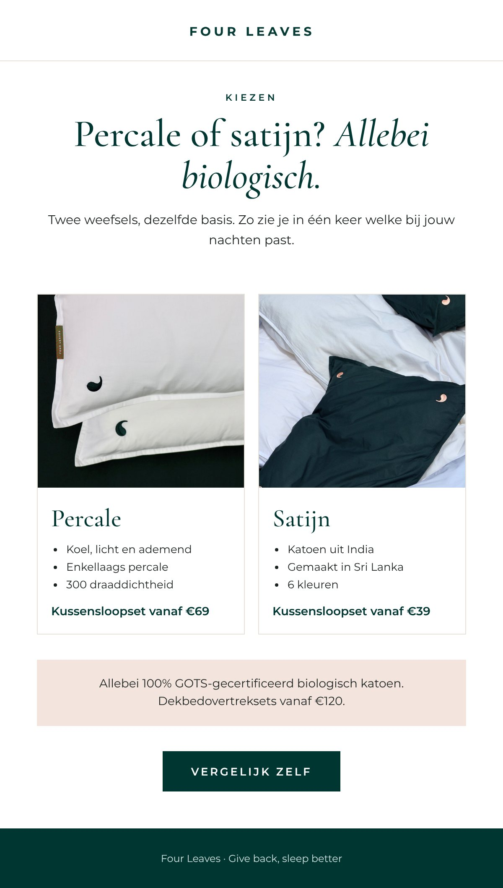

Voorbeelden voor Four Leaves
Vijf redenen om onder Four Leaves te slapen.
Vijf advertenties en twee nieuwsbrieven, gemaakt met jullie eigen foto's en productinformatie. Een idee van Issey Kooijmans van Digital Essence; niets hiervan is gepubliceerd.
Hoi team Four Leaves, jullie foto's van het donkergroene en roze beddengoed met dat kleine geborduurde blaadje vind ik echt mooi, en 'Give back, sleep better' is een verhaal dat in een advertentie meteen werkt. Met jullie eigen foto's heb ik vijf advertenties en twee nieuwsbrieven gemaakt. Niets is gepubliceerd. Past het niet, zeg het gerust.
Eerst even uitgelegd
Wat is een invalshoek?
Een invalshoek is de reden waarom iemand iets koopt. Hetzelfde beddengoed kun je op heel veel manieren verkopen, omdat niet iedereen om dezelfde reden koopt.
Hetzelfde beddengoed, vijf verschillende redenen om het te kopen. Elke reden wordt een eigen advertentie.

- 01Iemand zoals ik"Waarom ziet haar bed er altijd zo uitnodigend uit?"
- 02Het verhaal achter het merk"Wie zit er eigenlijk achter dit merk?"
- 03Transparantie"Is biologisch katoen echt anders, of is het een label?"
- 04Humor"Wat merk ik nou echt van ander beddengoed?"
- 05Een kleine eerste stap"Is een heel dekbedovertrek niet een grote gok?"
We testen die invalshoeken naast elkaar. Na een paar dagen zie je welke het meest verkoopt. Daar maken we er meer van, en wat niet werkt, gaat eruit.
Zo werk ik
Van eerste blik tot bestelling.
Niet iedereen die een advertentie ziet, is meteen klaar om te kopen. Daarom maak ik voor elke stap andere advertenties. Zo spreek je iedereen aan op het moment waar hij of zij zit.
- Stap 1 · Top of funnel
Kennismaken
Mensen die Four Leaves nog nooit hebben gezien.
Doel: dat ze stoppen met scrollen en nieuwsgierig worden.
Zoals een etalage: je loopt langs en kijkt even naar binnen.
- Stap 2 · Middle of funnel
Overtuigen
Mensen die jullie al eens zagen, maar nog twijfelen.
Doel: hun vragen beantwoorden. Wat is het, waarom dit en niet iets anders?
Zoals een verkoper die rustig uitlegt wat het verschil is.
- Stap 3 · Bottom of funnel
Kopen
Mensen die bijna willen bestellen.
Doel: het laatste duwtje, zoals een aanbod, reviews of de zekerheid van gratis retour.
Zoals de kassa: duidelijk, makkelijk en zonder risico.
Wat ik zag: in de advertentiebibliotheek van Meta vond ik geen actieve advertenties van Four Leaves. Jullie hebben alles voor de hele funnel: sfeervolle slaapkamerfoto's, een oprichter met een verhaal, een eerlijke herkomst (katoen uit India, een GOTS-fabriek bij Colombo) en een instapproduct vanaf €39.
Advertenties · 9:16
Vijf advertenties, verdeeld over de stappen.
Tik op een advertentie om hem groot te bekijken.
Voor mensen die Four Leaves nog niet kennen.
Voor mensen die jullie kennen, maar nog twijfelen.
Voor wie bijna bestelt.
Waarom advertenties
Zo groeien woontextielmerken op Instagram.
De meeste mensen ontdekken een nieuw beddengoedmerk niet via Google, maar tijdens het scrollen. Jullie concurrenten draaien daar nu vooral kortingsadvertenties. Een merk met een eigen verhaal en eerlijke herkomst valt juist op met een vaste set advertenties: één die het gevoel laat zien, één die uitlegt waarom het anders is en één die de eerste aankoop klein maakt. Een welkomstmail zorgt dat nieuwe inschrijvers ook echt bestellen.
Aantal advertenties: Meta Advertentiebibliotheek, 24-11-2026.
Nieuwsbrief 1 van 2 · Welkomstmail
Fijn dat je er bent. Give back, sleep better.
Op jullie site staat een aanmeldblok in de footer, maar zonder pop-up of welkomstmail. Dit is de eerste mail die nieuwe inschrijvers dan krijgen: het gevoel, drie feiten en het verhaal van Elaine.
- Jullie foto van iemand met thee in bed als hero
- Drie feiten: 100% GOTS biologisch katoen, 6 kleuren, steun aan meisjes in Kenia
- Elaine en haar achtergrond, met één knop naar de collectie

Nieuwsbrief 2 van 2 · Vergelijking
Percale of satijn? Allebei biologisch.
Wie twijfelt tussen twee weefsels, koopt vaak niets. Deze mail zet percale en satijn naast elkaar met jullie eigen feiten en prijzen, zodat de keuze makkelijk wordt.
- Percale: koel, licht en ademend, 300 draden per inch, kussensloopset vanaf €69
- Satijn: katoen uit India, 6 kleuren, kussensloopset vanaf €39
- Allebei GOTS-gecertificeerd, dekbedovertreksets vanaf €120

Ritme
Zo kan een week eruitzien.
Dit is een voorbeeld, geen vast pakket. De kracht zit in het ritme: regelmatig nieuwe invalshoeken testen in elke stap, en je nieuwsbrief vast versturen. Wat werkt, doen we vaker.
- MaNieuwe advertenties liveNieuwe invalshoeken in elke stap tegelijk testen.
- DiMeekijkenWelke invalshoek pakt de doelgroep op?
- WoBijsturenBudget naar wat werkt, de rest eruit.
- DoNieuwsbrief verstuurdVast moment, zodat lezers erop gaan rekenen.
- VrKorte updateWat werkte en wat we volgende week doen.
Benieuwd hoe dit voor Four Leaves werkt?
Een kwartiertje bellen is genoeg om te kijken of het past. Geen verplichtingen.